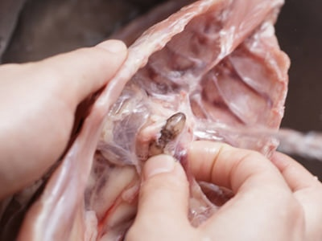
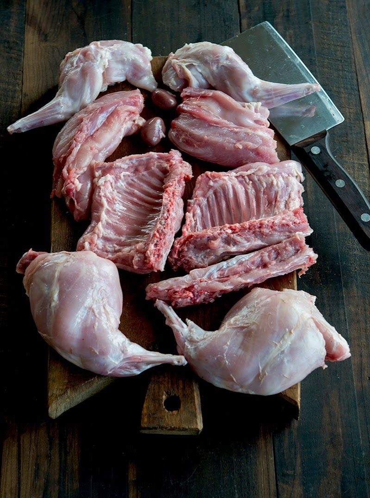
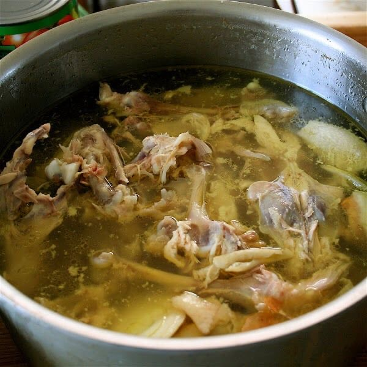
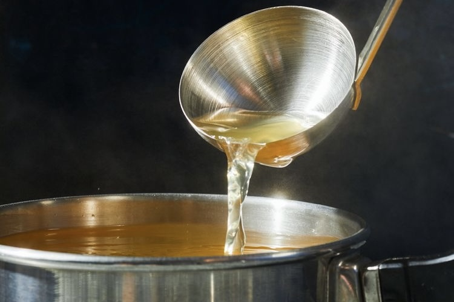

How We Make Our Chintan Soup

Chicken Carcass · Feet · Whole Chicken
We use chicken carcasses, feet, and whole chicken. The livers attached to the carcasses are thoroughly rinsed under running water to eliminate any unwanted bitterness.

Scored to the Bone
The whole chicken is carefully broken down and scored to the bone — a craftsman's technique to draw out every last drop of umami from the marrow.

Never Brought to a Boil
Held at a precise 94°C for 6 hours at a gentle simmer — this careful temperature control is the secret behind the broth's crystal-clear, golden color.

Pure & Clean Perfection
Hand-selected umami-rich ingredients are added to build depth and complexity. The broth is then carefully strained to a state of pure, clean perfection.
Как мы готовим бульон Чинтан
Куриные каркасы · Лапки · Целая курица
Мы используем куриные каркасы, лапки и целую курицу. Печень, прикреплённую к каркасам, тщательно промывают под проточной водой, чтобы устранить нежелательную горечь.
Надрезы до кости
Целую курицу тщательно разделывают и делают надрезы до самой кости — мастерский приём, позволяющий извлечь весь умами из костного мозга.
Никогда не доводится до кипения
Бульон выдерживается при точной температуре 94°C в течение 6 часов на медленном огне — именно этот контроль температуры является секретом кристально чистого золотистого цвета.
Чистое совершенство
Тщательно отобранные богатые умами ингредиенты добавляются для глубины и сложности вкуса. Затем бульон аккуратно процеживается до состояния чистого совершенства.
Ինչպես ենք պատրաստում մեր Չինտան բուլյոնը
Հավի կմախք · Ոտքեր · Ամբողջ հավ
Մենք օգտագործում ենք հավի կմախքներ, ոտքեր և ամբողջ հավ։ Կմախքներին կցված լյարդը մանրակրկիտ լվացվում է հոսող ջրի տակ՝ ցանկացած դառնություն վերացնելու համար։
Կտրվածքներ մինչև ոսկոր
Ամբողջ հավը մանրակրկիտ կտրատվում է և ոսկորներին կտրվածքներ են արվում — վարպետի տեխնիկա՝ ոսկրածուծից բոլոր ումամին քաղելու համար։
Երբեք չի եռացվում
Պահվում է ճշգրիտ 94°C-ում 6 ժամ մեղմ եռացմամբ — ջերմաստիճանի այս ճշգրիտ վերահսկումն է բուլյոնի բյուրեղապակու նման մաքուր ոսկեգույն գույնի գաղտնիքը։
Մաքուր կատարելություն
Ձեռքով ընտրված ումամիով հարուստ բաղադրիչներ են ավելացվում՝ խորություն և բարդություն ստեղծելու համար։ Այնուհետև բուլյոնը մանրակրկիտ քամվում է մինչև մաքուր կատարելության վիճակ։